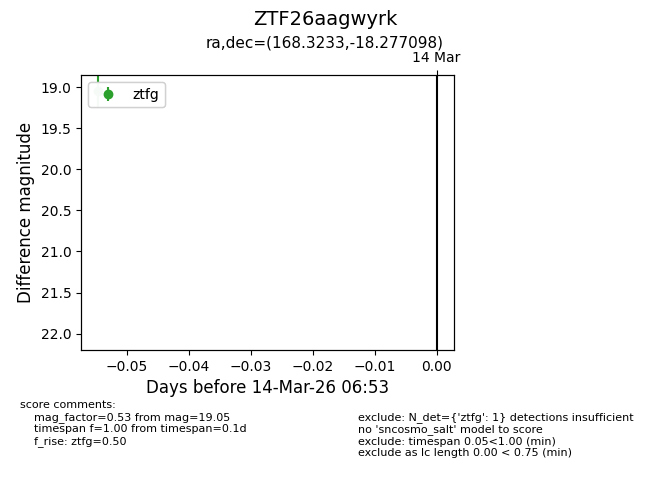
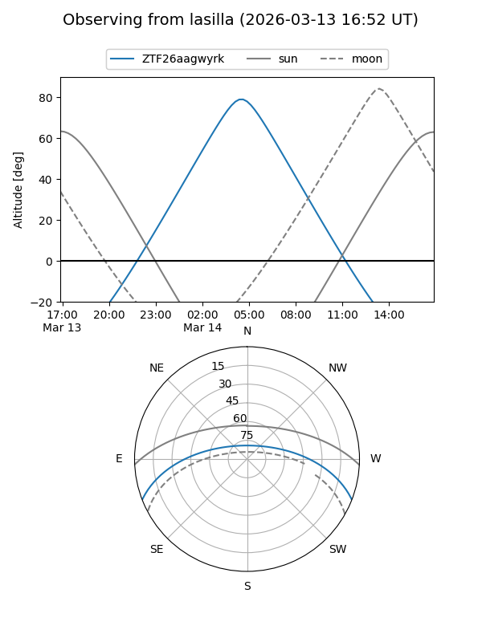
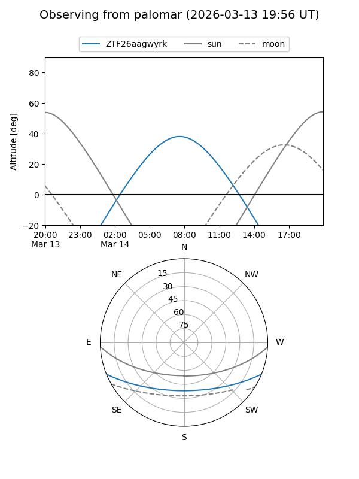

ZTF26aagwyrk
Target ZTF26aagwyrk at 2026-03-14 06:54
Aliases and brokers:
FINK: link
Lasair: link
ALeRCE: link
alt names
ZTF26aagwyrk (ztf,fink_ztf)
Coordinates:
equatorial (ra, dec) = 168.3233,-18.27710
equatorial (HMS+DMS) = 11:13:17.58,-18:16:37.55
galactic (l, b) = (272.5651,+38.73903)
Flags:
Photometry:
last ztfg=19.05
1 ztfg detections
Lightcurve

Visibility


Additional plots